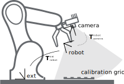

Hand-eye calibration¶
For applications, in which the camera is integrated into one or more robot systems, it needs to be calibrated w.r.t. some robot reference frames. For this purpose, the rc_visard NG is shipped with an on-board calibration routine called the hand-eye calibration module. It is a base module which is available on every rc_visard NG.
Note
The implemented calibration routine is completely agnostic about the user-defined robot frame to which the camera is calibrated. It might be a robot’s end-effector (e.g., flange or tool center point) or any point on the robot structure. The method’s only requirement is that the pose (i.e., translation and rotation) of this robot frame w.r.t. a user-defined external reference frame (e.g., world or robot mounting point) is exactly observable by the robot controller and can be reported to the calibration module.
The Calibration routine itself is an easy-to-use multi-step procedure using a calibration grid which can be obtained from Roboception.
Calibration interfaces¶
The following two interfaces are offered to conduct hand-eye calibration:
All services and parameters of this module required to conduct the hand-eye calibration programmatically are exposed by the rc_visard NG’s REST-API interface. The respective node name of this module is
rc_hand_eye_calibrationand the respective service calls are documented Services.Note
The described approach requires a network connection between the rc_visard NG and the robot controller to pass robot poses from the controller to the rc_visard NG’s calibration module.
For use cases where robot poses cannot be passed programmatically to the rc_visard NG’s hand-eye calibration module, the Web GUI’s Hand-Eye Calibration page under Configuration offers a guided process to conduct the calibration routine manually.
Note
During the process, the described approach requires the user to manually enter into the Web GUI robot poses, which need to be accessed from the respective robot-teaching or handheld device.
Camera mounting¶
As illustrated in Fig. 30 and Fig. 32, two different use cases w.r.t. to the mounting of the camera generally have to be considered:
- The camera is mounted on the robot, i.e., it is mechanically fixed to a robot link (e.g., at its flange or a flange-mounted tool), and hence moves with the robot.
- The camera is not mounted on the robot but is fixed to a table or other place in the robot’s vicinity and remains at a static position w.r.t. the robot.
While the general Calibration routine is very similar in both use cases, the calibration process’s output, i.e., the resulting calibration transform, will be semantically different, and the fixture of the calibration grid will also differ.
- Calibration with a robot-mounted camera
When calibrating a robot-mounted camera with the robot, the calibration grid has to be secured in a static position w.r.t. the robot, e.g., on a table or some other fixed-base coordinate system as sketched in Fig. 30.
Warning
It is extremely important that the calibration grid does not move during step 2 of the Calibration routine. Securely fixing its position to prevent unintended movements such as those caused by vibrations, moving cables, or the like is therefore strongly recommended.
The result of the calibration (step 3 of the Calibration routine) is a pose \(\mathbf{T}^{\text{robot}}_{\text{camera}}\) describing the (previously unknown) relative positional and rotational transformation from the camera frame into the user-selected robot frame such that
(3)¶\[\mathbf{p}_{\text{robot}} = \mathbf{R}^{\text{robot}}_{\text{camera}} \cdot \mathbf{p}_{\text{camera}} + \mathbf{t}^{\text{robot}}_{\text{camera}} \:,\]where \(\mathbf{p}_{\text{robot}} = (x,y,z)^T\) is a 3D point with its coordinates expressed in the robot frame, \(\mathbf{p}_{\text{camera}}\) is the same point represented in the camera coordinate frame, and \(\mathbf{R}^{\text{robot}}_{\text{camera}}\) as well as \(\mathbf{t}^{\text{robot}}_{\text{camera}}\) are the corresponding \(3\times 3\) rotation matrix and \(3\times 1\) translation vector of the pose \(\mathbf{T}^{\text{robot}}_{\text{camera}}\), respectively. In practice, in the calibration result and in the provided robot poses, the rotation is defined by Euler angles or as quaternion instead of a rotation matrix (see Pose formats).
Fig. 30 Important frames and transformations for calibrating a camera that is mounted on a general robot. The camera is mounted with a fixed relative position to a user-defined robot frame (e.g., flange or TCP). It is important that the pose \(\mathbf{T}^{\text{ext}}_{\text{robot}}\) of this robot frame w.r.t. a user-defined external reference frame ext is observable during the calibration routine. The result of the calibration process is the desired calibration transformation \(\mathbf{T}^{\text{robot}}_{\text{camera}}\), i.e., the pose of the camera frame within the user-defined robot frame.
Additional user input is required if the movement of the robot is constrained and the robot can rotate the Tool Center Point (TCP) only around one axis. This is typically the case for robots with four Degrees Of Freedom (4DOF) that are often used for palletizing tasks. In this case, the user must specify which axis of the robot frame is the rotation axis of the TCP. Further, the signed offset from the TCP to the camera coordinate system along the TCP rotation axis has to be provided. Fig. 31 illustrates the situation.
For the rc_visard NG, the camera coordinate system is located in the optical center of the left camera. The approximate location is given in section Coordinate frames.

Fig. 31 In case of a 4DOF robot, the TCP rotation axis and the offset from the TCP to the camera coordinate system along the TCP rotation axis must be provided. In the illustrated case, this offset is negative.
- Calibration with a statically-mounted camera
In use cases where the camera is positioned statically w.r.t. the robot, the calibration grid needs to be mounted to the robot as shown for example in Fig. 32 and Fig. 33.
Note
The hand-eye calibration module is completely agnostic about the exact mounting and positioning of the calibration grid w.r.t. the user-defined robot frame. That means, the relative positioning of the calibration grid to that frame neither needs to be known, nor it is relevant for the calibration routine, as shown in Fig. 33.
Warning
It is extremely important that the calibration grid is attached securely to the robot such that it does not change its relative position w.r.t. the user-defined robot frame during step 2 of the Calibration routine.
In this use case, the result of the calibration (step 3 of the Calibration routine) is the pose \(\mathbf{T}^{\text{ext}}_{\text{camera}}\) describing the (previously unknown) relative positional and rotational transformation between the camera frame and the user-selected external reference frame ext such that
(4)¶\[\mathbf{p}_{\text{ext}} = \mathbf{R}^{\text{ext}}_{\text{camera}} \cdot \mathbf{p}_{\text{camera}} + \mathbf{t}^{\text{ext}}_{\text{camera}} \:,\]where \(\mathbf{p}_{\text{ext}} = (x,y,z)^T\) is a 3D point with its coordinates expressed in the external reference frame ext, \(\mathbf{p}_{\text{camera}}\) is the same point represented in the camera coordinate frame, and \(\mathbf{R}^{\text{ext}}_{\text{camera}}\) as well as \(\mathbf{t}^{\text{ext}}_{\text{camera}}\) are the corresponding \(3\times 3\) rotation matrix and \(3\times 1\) translation vector of the pose \(\mathbf{T}^{\text{ext}}_{\text{camera}}\), respectively. In practice, in the calibration result and in the provided robot poses, the rotation is defined by Euler angles or as quaternion instead of a rotation matrix (see Pose formats).
Fig. 32 Important frames and transformations for calibrating a statically mounted camera: The latter is mounted with a fixed position relative to a user-defined external reference frame ext (e.g., the world coordinate frame or the robot’s mounting point). It is important that the pose \(\mathbf{T}^{\text{ext}}_{\text{robot}}\) of the user-defined robot frame w.r.t. this frame is observable during the calibration routine. The result of the calibration process is the desired calibration transformation \(\mathbf{T}^{\text{ext}}_{\text{camera}}\), i.e., the pose of the camera frame in the user-defined external reference frame ext.
Additional user input is required if the movement of the robot is constrained and the robot can rotate the Tool Center Point (TCP) only around one axis. This is typically the case for robots with four Degrees Of Freedom (4DOF) that are often used for palletizing tasks. In this case, the user must specify which axis of the robot frame is the rotation axis of the TCP. Further, the signed offset from the TCP to the visible surface of the calibration grid along the TCP rotation axis has to be provided. The grid must be mounted such that the TCP rotation axis is orthogonal to the grid. Fig. 34 illustrates the situation.
{kind=link}
{kind=link}
{kind=link}
{kind=link}
Calibration routine¶
The hand-eye calibration can be performed manually using the Web GUI or programmatically via the REST-API interface. The general calibration routine will be described by following the steps of the hand-eye calibration wizard provided on the Web GUI. This wizard can be found in the rc_visard NG’s Web GUI under . References to the corresponding REST-API calls are provided at the appropriate places.
Step 1: Hand-Eye Calibration Status¶
The starting page of the hand-eye calibration wizard shows the current status of the hand-eye calibration. If a hand-eye calibration is saved on the rc_visard NG, the calibration transformation is displayed here (see Fig. 35).
{kind=link}
To query the hand-eye calibration status programmatically, the module’s REST-API
offers the get_calibration service call (see
Services).
An existing hand-eye calibration can be removed by pressing
Remove Calibration or using remove_calibration in the REST-API (see
Services).
To start a new hand-eye calibration, click on Perform Hand-Eye Calibration or Next.
Step 2: Checking Grid Detection¶
To achieve good calibration results, the images should be well exposed so that the calibration grid can be detected accurately and reliably. In this step, the grid detection can be checked and the camera settings can be adjusted if necessary. In case parts of the calibration grid are overexposed, the respective squares of the calibration grid will be highlighted in red. A successful grid detection is visualized by green check marks on every square of the calibration grid and a thick green border around the grid as shown in Fig. 36.
{kind=link}
Step 3: Record Poses¶
In this step, the user records images of the calibration grid at several different robot poses. These poses must each ensure that the calibration grid is completely visible in the left camera image. Furthermore, the robot poses need to be selected properly to achieve a variety of different perspectives for the camera to perceive the calibration grid. Fig. 37 shows a schematic recommendation of four different grid positions which should be recorded from a close and a far point of view, resulting in eight images for the calibration.

Fig. 37 Recommended views on the calibration grid during the calibration procedure. In case of a 4DOF robot, other views have to be chosen, which should be as different as possible.
Warning
Calibration quality, i.e., the accuracy of the calculated calibration result, depends on the calibration-grid views provided. The more diverse the perspectives are, the better is the calibration. Choosing very similar views, i.e., varying the robot pose only slightly before recording a new calibration pose, may lead to inaccurate estimation of the desired calibration transformation.
After the robot reaches each calibration pose, the corresponding pose \(\mathbf{T}^{\text{ext}}_{\text{robot}}\) of the user-defined robot frame in the user-defined external reference frame ext needs to be reported to the hand-eye calibration module. For this purpose, the module offers different slots to store the reported poses and the corresponding left camera images. All filled slots will then be used to calculate the desired calibration transformation between the camera frame and either the user-defined robot frame (robot-mounted camera) or the user-defined external reference frame ext (static camera).
In the Web GUI, the user can choose between many different pose formats for providing the calibration poses (see Pose formats). When calibrating using the REST-API, the poses are always given in XYZ+quaternion. The Web GUI offers eight slots (Close View 1, Close View 2, etc.) for the user to fill manually with robot poses. Next to each slot, a figure suggests a respective dedicated viewpoint on the grid. For each slot, the robot should be operated to achieve the suggested view.
{kind=link}
To record a calibration pose, click on Set Pose for the respective slot and enter the robot frame’s pose into the respective text fields. The pose is then stored with the corresponding camera image by clicking the Take Picture to Proceed button. This will save the calibration pose in the respective slot.
To transmit the poses programmatically, the module’s REST-API
offers the set_pose service call (see
Services).
Note
The user’s acquisition of robot pose data depends on the robot model and manufacturer – it might be read from a teaching or handheld device, which is shipped with the robot.
Warning
Please be careful to correctly and accurately enter the values; even small variations or typos may lead to calibration-process failure.
The Web GUI displays the currently saved poses (only with slot numbers from 0 to 7)
with their camera images and also allows to delete them by clicking
Delete Pose to remove a single pose, or clicking Clear all Poses to remove all poses.
In the REST-API the currently stored poses can be retrieved via get_poses and removed
via delete_poses for single poses or reset_calibration for removing all poses
(see Services).
When at least four poses are set, the user can continue to the computation of the calibration result by pressing Next.
Note
To successfully calculate the hand-eye calibration transformation, at least four different robot calibration poses need to be reported and stored in slots. However, to prevent errors induced by possible inaccurate measurements, at least eight calibration poses are recommended.
Step 4: Compute Calibration¶
Before computing the calibration result, the user has to provide the correct calibration parameters. These include the exact calibration grid dimensions and the sensor mounting type. The Web GUI also offers settings for calibrating 4DOF robots. In this case, the rotation axis, as well as the offset from the TCP to the camera coordinate system (robot-mounted camera) or grid surface (statically mounted camera) must be given. For the REST-API, the respective parameters are listed in Parameters.
{kind=link}
Fig. 39 Defining hand-eye calibration parameters and computing the calibration result via the rc_visard NG’s Web GUI
When the parameters are correct, the desired calibration transformation
can be computed from the collected poses and camera images by clicking
Compute Calibration. The REST-API offers this functionality via the
calibrate service call
(see Services).
Depending on the way the camera is mounted, the calibration result contains the transformation (i.e., the pose) between the camera frame and either the user-defined robot frame (robot-mounted camera) or the user-defined external reference frame ext (statically mounted camera); see Camera mounting.
To enable users to judge the quality of the resulting calibration transformation, the translational and rotational calibration errors are reported, which are computed from the variance of the calibration result.
If the calibration error is not acceptable, the user can change the calibration parameters and recompute the result, or return to step 3 of the calibration procedure and add more poses or update poses.
To save the calibration result, press Save Calibration or use the
REST-API save_calibration service call
(see Services).
Parameters¶
The hand-eye calibration module is called rc_hand_eye_calibration in the REST-API and is
represented in the
Web GUI
under .
The user can change the calibration parameters there or use the
REST-API interface.
Parameter overview¶
This module offers the following run-time parameters:
| Name | Type | Min | Max | Default | Description |
|---|---|---|---|---|---|
grid_height |
float64 | 0.0 | 10.0 | 0.0 | The height of the calibration pattern in meters |
grid_width |
float64 | 0.0 | 10.0 | 0.0 | The width of the calibration pattern in meters |
robot_mounted |
bool | false | true | true | Whether the camera is mounted on the robot |
tcp_offset |
float64 | -10.0 | 10.0 | 0.0 | Offset from TCP along tcp_rotation_axis |
tcp_rotation_axis |
int32 | -1 | 2 | -1 | -1 for off, 0 for x, 1 for y, 2 for z |
Description of run-time parameters¶
The parameter descriptions are given with the corresponding Web GUI names in brackets.
grid_width (Width)¶
Width of the calibration grid in meters. The width should be given with a very high accuracy, preferably with sub-millimeter accuracy.
Via the REST-API, this parameter can be set as follows.
PUT http://<host>/api/v2/pipelines/0/nodes/rc_hand_eye_calibration/services/parameters?grid_width=<value>PUT http://<host>/api/v1/nodes/rc_hand_eye_calibration/parameters?grid_width=<value>
grid_height (Height)¶
Height of the calibration grid in meters. The height should be given with a very high accuracy, preferably with sub-millimeter accuracy.
Via the REST-API, this parameter can be set as follows.
PUT http://<host>/api/v2/pipelines/0/nodes/rc_hand_eye_calibration/services/parameters?grid_height=<value>PUT http://<host>/api/v1/nodes/rc_hand_eye_calibration/parameters?grid_height=<value>
robot_mounted (Sensor Mounting)¶
If set to true, the camera is mounted on the robot. If set to false, the camera is mounted statically and the calibration grid is mounted on the robot.
Via the REST-API, this parameter can be set as follows.
PUT http://<host>/api/v2/pipelines/0/nodes/rc_hand_eye_calibration/services/parameters?robot_mounted=<value>PUT http://<host>/api/v1/nodes/rc_hand_eye_calibration/parameters?robot_mounted=<value>
tcp_offset (TCP Offset)¶
The signed offset from the TCP to the camera coordinate system (robot-mounted sensor) or the visible surface of the calibration grid (statically mounted sensor) along the TCP rotation axis in meters. This is required if the robot’s movement is constrained and it can rotate its TCP only around one axis (e.g., 4DOF robot).
Via the REST-API, this parameter can be set as follows.
PUT http://<host>/api/v2/pipelines/0/nodes/rc_hand_eye_calibration/services/parameters?tcp_offset=<value>PUT http://<host>/api/v1/nodes/rc_hand_eye_calibration/parameters?tcp_offset=<value>
tcp_rotation_axis (TCP Rotation Axis)¶
The axis of the robot frame around which the robot can rotate its TCP. 0 is used for X, 1 for Y and 2 for the Z axis. This is required if the robot’s movement is constrained and it can rotate its TCP only around one axis (e.g., 4DOF robot). -1 means that the robot can rotate its TCP around two independent rotation axes.
tcp_offsetis ignored in this case.Via the REST-API, this parameter can be set as follows.
PUT http://<host>/api/v2/pipelines/0/nodes/rc_hand_eye_calibration/services/parameters?tcp_rotation_axis=<value>PUT http://<host>/api/v1/nodes/rc_hand_eye_calibration/parameters?tcp_rotation_axis=<value>
Services¶
The REST-API service calls offered to programmatically conduct the hand-eye calibration and to restore this module’s parameters are explained below.
get_calibration¶
returns the hand-eye calibration currently stored on the rc_visard NG.
Details
This service can be called as follows.
PUT http://<host>/api/v2/pipelines/0/nodes/rc_hand_eye_calibration/services/get_calibrationPUT http://<host>/api/v1/nodes/rc_hand_eye_calibration/services/get_calibrationThis service has no arguments.The field
errorgives the calibration error in pixels which is computed from the translational errortranslation_error_meterand the rotational errorrotation_error_degree. This value is only given for compatibility with older versions. The translational and rotational errors should be preferred.
Table 35 Return codes of the get_calibrationservice call¶statussuccessDescription 0 truereturned valid calibration pose 2 falsecalibration result is not available The definition for the response with corresponding datatypes is:
{ "name": "get_calibration", "response": { "error": "float64", "message": "string", "pose": { "orientation": { "w": "float64", "x": "float64", "y": "float64", "z": "float64" }, "position": { "x": "float64", "y": "float64", "z": "float64" } }, "robot_mounted": "bool", "rotation_error_degree": "float64", "status": "int32", "success": "bool", "translation_error_meter": "float64" } }
remove_calibration¶
removes the persistent hand-eye calibration on the rc_visard NG. After this call the
get_calibrationservice reports again that no hand-eye calibration is available. This service call will also delete all the stored calibration poses and corresponding camera images in theslots.Details
This service can be called as follows.
PUT http://<host>/api/v2/pipelines/0/nodes/rc_hand_eye_calibration/services/remove_calibrationPUT http://<host>/api/v1/nodes/rc_hand_eye_calibration/services/remove_calibrationThis service has no arguments.
Table 36 Return codes of the get_calibrationservice call¶statussuccessDescription 0 trueremoved persistent calibration, device reports as uncalibrated 1 trueno persistent calibration found, device reports as uncalibrated 2 falsecould not remove persistent calibration The definition for the response with corresponding datatypes is:
{ "name": "remove_calibration", "response": { "message": "string", "status": "int32", "success": "bool" } }
set_pose¶
allows to provide a robot pose as calibration pose to the hand-eye calibration routine and records the current image of the calibration grid.
Details
This service can be called as follows.
PUT http://<host>/api/v2/pipelines/0/nodes/rc_hand_eye_calibration/services/set_posePUT http://<host>/api/v1/nodes/rc_hand_eye_calibration/services/set_poseThe
slotargument is used to assign unique numbers to the different calibration poses. The range forslotis from 0 to 15. At each instant whenset_poseis called, an image is recorded. This service call fails if the grid was undetectable in the current image.The definition for the request arguments with corresponding datatypes is:
{ "args": { "pose": { "orientation": { "w": "float64", "x": "float64", "y": "float64", "z": "float64" }, "position": { "x": "float64", "y": "float64", "z": "float64" } }, "slot": "uint32" } }
Table 37 Return codes of the set_poseservice call¶statussuccessDescription 1 truepose stored successfully 3 truepose stored successfully; collected enough poses for calibration, i.e., ready to calibrate 4 falsecalibration grid was not detected, e.g., not fully visible in camera image 8 falseno image data available 12 falsegiven orientation values are invalid 13 falseinvalid slot number The field
overexposedindicates if parts of the calibration grid were overexposed in this image.The definition for the response with corresponding datatypes is:
{ "name": "set_pose", "response": { "message": "string", "overexposed": "bool", "status": "int32", "success": "bool" } }
get_poses¶
returns the robot poses that are currently stored for the hand-eye calibration routine.
Details
This service can be called as follows.
PUT http://<host>/api/v2/pipelines/0/nodes/rc_hand_eye_calibration/services/get_posesPUT http://<host>/api/v1/nodes/rc_hand_eye_calibration/services/get_posesThis service has no arguments.
Table 38 Return codes of the get_posesservice call¶statussuccessDescription 0 truestored poses are returned 1 trueno calibration pose available The field
overexposedindicates if parts of the calibration grid were overexposed in this image.The definition for the response with corresponding datatypes is:
{ "name": "get_poses", "response": { "message": "string", "poses": [ { "overexposed": "bool", "pose": { "orientation": { "w": "float64", "x": "float64", "y": "float64", "z": "float64" }, "position": { "x": "float64", "y": "float64", "z": "float64" } }, "slot": "uint32" } ], "status": "int32", "success": "bool" } }
delete_poses¶
deletes the calibration poses and corresponding images with the specified
slots.Details
This service can be called as follows.
PUT http://<host>/api/v2/pipelines/0/nodes/rc_hand_eye_calibration/services/delete_posesPUT http://<host>/api/v1/nodes/rc_hand_eye_calibration/services/delete_posesThe
slotsargument specifies which calibration poses should be deleted. If no slots are provided, nothing will be deleted.The definition for the request arguments with corresponding datatypes is:
{ "args": { "slots": [ "uint32" ] } }
Table 39 Return codes of the delete_posesservice call¶statussuccessDescription 0 trueposes successfully deleted 1 trueno slots given The definition for the response with corresponding datatypes is:
{ "name": "delete_poses", "response": { "message": "string", "status": "int32", "success": "bool" } }
reset_calibration¶
deletes all previously provided poses and corresponding images. The last saved calibration result is reloaded. This service might be used to (re-)start the hand-eye calibration from scratch.
Details
This service can be called as follows.
PUT http://<host>/api/v2/pipelines/0/nodes/rc_hand_eye_calibration/services/reset_calibrationPUT http://<host>/api/v1/nodes/rc_hand_eye_calibration/services/reset_calibrationThis service has no arguments.The definition for the response with corresponding datatypes is:
{ "name": "reset_calibration", "response": { "message": "string", "status": "int32", "success": "bool" } }
calibrate¶
calculates and returns the hand-eye calibration transformation with the robot poses configured by the
set_poseservice.Details
save_calibrationmust be called to make the calibration available for other modules via theget_calibrationservice call and to store it persistently.Note
For calculating the hand-eye calibration transformation at least four robot calibration poses are required (see
set_poseservice). However, eight calibration poses are recommended.This service can be called as follows.
PUT http://<host>/api/v2/pipelines/0/nodes/rc_hand_eye_calibration/services/calibratePUT http://<host>/api/v1/nodes/rc_hand_eye_calibration/services/calibrateThis service has no arguments.The field
errorgives the calibration error in pixels which is computed from the translational errortranslation_error_meterand the rotational errorrotation_error_degree. This value is only given for compatibility with older versions. The translational and rotational errors should be preferred.
Table 40 Return codes of the calibrateservice call¶statussuccessDescription 0 truecalibration successful, returned calibration result 1 falsenot enough poses to perform calibration 2 falsecalibration result is invalid, please verify the input data 3 falsegiven calibration grid dimensions are not valid 4 falseinsufficient rotation, tcp_offsetandtcp_rotation_axismust be specified5 falsesufficient rotation available, tcp_rotation_axismust be set to -16 falseposes are not distinct enough from each other The definition for the response with corresponding datatypes is:
{ "name": "calibrate", "response": { "error": "float64", "message": "string", "pose": { "orientation": { "w": "float64", "x": "float64", "y": "float64", "z": "float64" }, "position": { "x": "float64", "y": "float64", "z": "float64" } }, "robot_mounted": "bool", "rotation_error_degree": "float64", "status": "int32", "success": "bool", "translation_error_meter": "float64" } }
save_calibration¶
persistently saves the result of hand-eye calibration to the rc_visard NG and overwrites the existing one. The stored result can be retrieved any time by the
get_calibrationservice. This service call will also delete all the stored calibration poses and corresponding camera images in theslots.Details
This service can be called as follows.
PUT http://<host>/api/v2/pipelines/0/nodes/rc_hand_eye_calibration/services/save_calibrationPUT http://<host>/api/v1/nodes/rc_hand_eye_calibration/services/save_calibrationThis service has no arguments.
Table 41 Return codes of the save_calibrationservice call¶statussuccessDescription 0 truecalibration saved successfully 1 falsecould not save calibration file 2 falsecalibration result is not available The definition for the response with corresponding datatypes is:
{ "name": "save_calibration", "response": { "message": "string", "status": "int32", "success": "bool" } }
set_calibration¶
sets the hand-eye calibration transformation with arguments of this call.
Details
The calibration transformation is expected in the same format as returned by the
calibrateandget_calibrationcalls. The given calibration information is also stored persistently on the sensor by internally callingsave_calibration.This service can be called as follows.
PUT http://<host>/api/v2/pipelines/0/nodes/rc_hand_eye_calibration/services/set_calibrationPUT http://<host>/api/v1/nodes/rc_hand_eye_calibration/services/set_calibrationThe definition for the request arguments with corresponding datatypes is:
{ "args": { "pose": { "orientation": { "w": "float64", "x": "float64", "y": "float64", "z": "float64" }, "position": { "x": "float64", "y": "float64", "z": "float64" } }, "robot_mounted": "bool" } }
Table 42 Return codes of the set_calibrationservice call¶statussuccessDescription 0 truesetting the calibration transformation was successful 12 falsegiven orientation values are invalid The definition for the response with corresponding datatypes is:
{ "name": "set_calibration", "response": { "message": "string", "status": "int32", "success": "bool" } }
reset_defaults¶
restores and applies the default values for this module’s parameters (“factory reset”). Does not affect the calibration result itself or any of the
slotssaved during calibration. Only parameters such as the grid dimensions and the mount type will be reset.Details
This service can be called as follows.
PUT http://<host>/api/v2/pipelines/0/nodes/rc_hand_eye_calibration/services/reset_defaultsPUT http://<host>/api/v1/nodes/rc_hand_eye_calibration/services/reset_defaultsThis service has no arguments.The definition for the response with corresponding datatypes is:
{ "name": "reset_defaults", "response": { "return_code": { "message": "string", "value": "int16" } } }